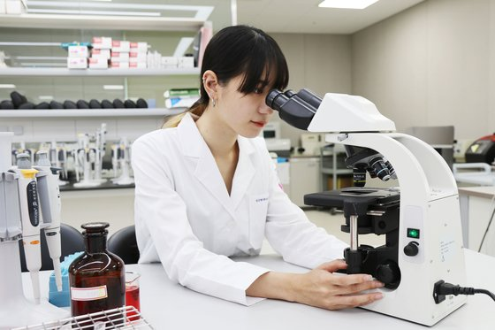

임상병리학과

학과개요
병원에 가면 소변검사와 혈액검사를 통해 우리의 몸에 병이 있는지 진단합니다. 이렇게 소변검사와 혈액검사를 해주시는 선생님이 임상병리사입니다. 임상병리과는 임상병리 검사를 잘 수행할 수 있는 유능한 임상병리사를 키우고자 합니다. 임상병리과에서는 환자의 혈액이나 체액, 소변, 조직 등을 화학, 생물학, 물리학, 유전학적인 방법으로 분석하는 것을 배웁니다.
학과특성
임상병리학은 현대 의학의 발전과 더불어 빠른 속도로 발전하고 있습니다. 임상병리과는 인체에서 발생하는 각종 질병의 원인, 치료 과정 등을 과학적으로 분석하고 치료 및 예방에 도움을 줄 수 있으므로 현대 의학에서 중요한 역할을 수행하고 있습니다.
흥미와 적성
실험이나 실습을 좋아하고 화학이나 생물, 물리 등의 교과목에 흥미가 있는 사람이면 좋습니다. 다양한 임상병리 기계 및 화학 약품 등을 사용하여 공부하기 때문에 분석적 사고력이 필요하고, 미세한 세포와 조직 등을 검사하고 분별할 수 있어야 하므로 관찰력이 좋아야 합니다.
대학 주요 교과목
- 임상생리학
- 심전도, 심음도, 폐기능검사, 뇌파, 초음파기구 등을 이용해 분석ㆍ평가된 의학정보를 참고하여 질병을 진단하고 치료 후 판정에 중요한 임상적 의의에 대해 배웁니다.
- 임상화학
- 인체의 체액으로부터 얻은 가검물을 이용하여 생화학적 대사과정에서 발생할 수 있는 인체 대사산물 또는 생성물질(탄수화물, 단백질, 비단백질소화합물, 지질, 무기질, 호르몬, 효소 등)의 성분을 분석하고, 질병과의 관계를 파악하는 방법 및 원리를 이해합니다.
- 임상미생물학
- 자연계에는 인체에 감염되어 심각한 질병을 유발할 수 있는 병원성 미생물이 존재합니다. 이런 미생물을 조사하기 위해서 미생물의 균주 분류, 형태학적 특성, 대사과정에 의한 생물화학적 특성 및 유전학적 기초 이론과 인체와 관련된 미생물의 병원성에 관한 기초적인 이론을 배웁니다.
- 병리학
- 여러 가지 질병을 원인별로 분류하여 질병의 특성과 증후, 진단법 등을 공부하고 병리학적 검사의 의의와 중요성을 인식하도록 합니다.
- 진단세포학 및 실습
- 인체 각 부위의 특징적인 세포의 구조와 특징을 익히고 질병의 세포학적 진단을 위한 표본의 채취, 제작, 판독 등에 필요한 이론을 공부합니다.
관련 직업
- 임상병리사
- 보건교육사
- 생명과학연구원
- 임상연구코디네이터